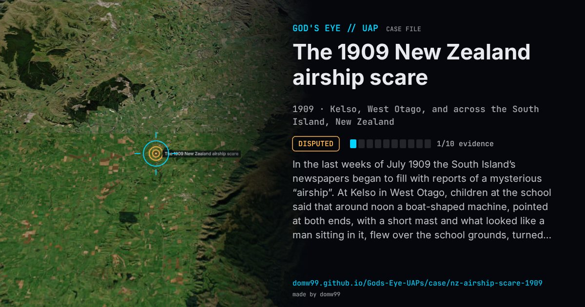

The 1909 New Zealand airship scare

In the last weeks of July 1909 the South Island’s newspapers began to fill with reports of a mysterious “airship”. At Kelso in West Otago, children at the school said that around noon a boat-shaped machine, pointed at both ends, with a short mast and what looked like a man sitting in it, flew over the school grounds, turned and went back toward the Blue Mountains; the local correspondent wrote that at least five people had seen it and their accounts agreed. At night, lights were reported from Orepuki, Oamaru, Christchurch and Dunedin, where a man woken at 2 a.m. said he saw a large dark object with a searchlight float past Knox College. In Blenheim on July 31 a crowd at the Criterion Hotel corner watched a light toward the Wairau Bar until after midnight, and a bar pilot reported a light passing over the pilot station toward Kaikōura. No airship existed in the country, and the reports faded by September.
Explanation
There was no airship in New Zealand in 1909. Most of the reports were of lights at night; the meteorologist Clement Wragge suggested secret local trials or “cosmic dust”, and said some observers had mistaken Venus, Jupiter and Mars for an airship, while others blamed hoaxers, kite lanterns and fire balloons. Historians treat it as one of the “scareship” panics of 1909–1913, when newspapers in Britain, Australia and New Zealand were full of fears of foreign airships. The daylight “boat” seen at Kelso has no specific explanation.
What was seen
Shape: A boat- or cigar-shaped craft by day; a moving light, sometimes with a searchlight, by night
Witnesses: Schoolchildren and at least five adults at Kelso; residents of Dunedin, Christchurch, Oamaru, Orepuki and Blenheim; a bar pilot at the Wairau Bar
Duration: Weeks: reports ran from mid-July into early September 1909
Sources
- Otago Daily Times, “100 years ago”: the Kelso report of July 1909
- Marlborough Express, August 2, 1909, “Seen in Blenheim” (transcription)
- Gisborne Times, August 6, 1909 (Papers Past)
Browse
- New Zealand
- 1900s
- Disputed
- Mass sightings
- Many independent witnesses
- Lights and fireballs
- Cylinders and cigar shapes